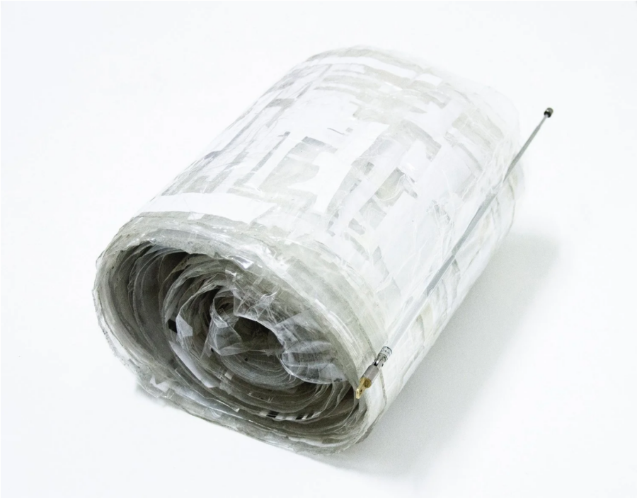

Carrier
Carrier is a group exhibition centered on a sixty-foot-long paper and tape collage scroll by the late Chicago-based Korean-American artist Gregory Bae. The work was created from non-alphabetical printed elements, such as punctuation marks and technical graphics, cut from radio instruction manuals. Carrier brings together a group of primarily Chicago-based artists, several of them collaborators and friends of Bae, to respond to the scroll.
Structured around a “score” developed by the curators, the exhibition invited the artists to engage with the scroll as a prompt: something to be read, misread, translated, withheld, or activated. The works exhibited consider how meaning is formed through fragments, omissions, and margins — elements that are often present but overlooked.
Bae’s scroll draws from three radio instruction manuals, sources designed to transmit information clearly and efficiently. By isolating punctuation, diagrams, and residual marks from these texts, Bae redirected attention away from instruction and toward what remains once printed language is stripped of its intended functions. The resulting visual abstraction evokes multiple reference points at once: ancient scrolls, Modernist musical notation, and the gestural mark-making associated with Abstract Expressionism. Bae described his interest in the “leftover margins, blank negative shapes, disassociated symbols and punctuation” that tend to disappear when systems prioritize clarity, order, and rule-following.
At the exhibition opening, Bae’s scroll will be presented fully unrolled for the first time. The opening will also include a talk by co-curator John Neff, who spent several months attempting to make a single-shot, high-resolution image of the entire scroll. That project began in conversation with Bae prior to his death and continued afterward, raising questions about authorship, access, and the limits of documentation. Neff’s talk reflects on those attempts and on the challenges of translating an object that resists easy re-presentation.
Following the opening, the scroll will remain concealed for the duration of the exhibition. This decision emphasizes the tension between presence and absence that runs throughout the project. With the scroll physically hidden, its influence will persist through the works, performances, and discussions it has set in motion.
The exhibition will conclude with a series of closing performances from Kiku Hibino (March 13) and Rashayla Marie Brown (March 7). These events will continue the exploration of the scroll as a score, particularly through sound and musical interpretation, and may include collaboration with Lumpen Radio.
An exhibition booklet, featuring an essay by Dr. Bosco Bae along with Neff’s interpretation of a 2019 interview he conducted with Gregory Bae about the scroll, will be printed at the end of the exhibition. The publication will also include a collaborative syllabi extending the exhibition’s inquiry into pedagogical and collective forms of knowledge-sharing.
Rather than positioning Gregory Bae’s work as a singular legacy, Carrier treats the scroll as a living site of exchange. The exhibition foregrounds how shared histories, relationships, and informal systems of learning continue to shape artistic practice, often through what remains unspoken, unseen, or unresolved.